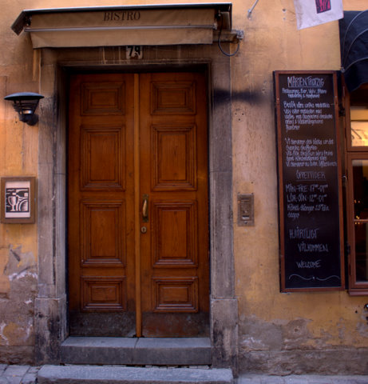

Kontakta oss
Vi värdesätter personliga relationer och föredrar att träffas i verkligheten. Vill du träffa oss så går det bra att maila info@agical.se eller ringa vår växel, 08-221580 och fråga efter någon av oss.
Hitta till oss
Vårt kontor ligger centralt i Gamla Stan, nära Järntorget.
Address: Västerlånggatan 79, 2 tr
Åker du kommunalt fungerar Slussen eller Gamla Stan lika bra, kontoret ligger mitt i mellan båda. Åker du bil parkerar du enklast på Söder eller i Katarinabergets parkeringsgarage.
